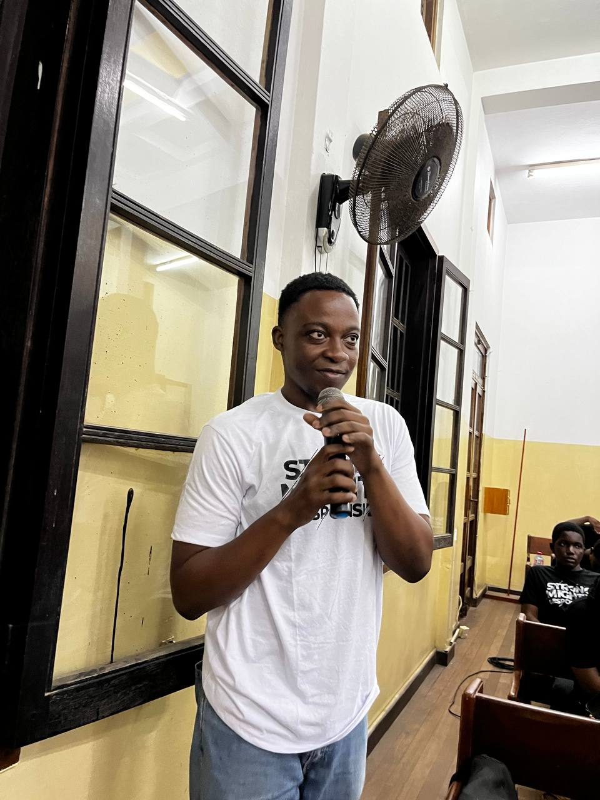

The following are some few people who has graduated the from the University of Ghana
and has come back to improve the lives of students on campus
Our Alumini
Dr. Kelvin Tetteh
Dr. Kelvin Tetteh, a visionary in the realm of computer science, embarked on his academic journey at the University of Ghana's Computer Science Department with a fervor for innovation. From the moment he set foot on campus, his insatiable curiosity and dedication to pushing the boundaries of knowledge were evident.
Dr. Tetteh's brilliance shone through as he pursued his Master's degree, where he delved into groundbreaking research that garnered attention for its impact on the field. His relentless pursuit of excellence continued into his Ph.D., a milestone marked by the development of cutting-edge algorithms that revolutionized data analysis.
Throughout his academic tenure, Dr. Tetteh's achievements not only elevated the Computer Science Department but also inspired a new generation of researchers to push the frontiers of technology.
Upon earning his Ph.D., Dr. Tetteh continued to make substantial contributions to the field of computer science. His research, focusing on the intersection of technology and healthcare, resulted in the development of advanced diagnostic tools and systems aimed at improving patient care
Prof. Nessa Quaye
Vanessa Quaye, an illustrious alumna of the University of Ghana, distinguished herself as a trailblazer in the field of programming. Majored in programming during her undergraduate years, Vanessa demonstrated exceptional skills and a passion for software development that set her apart
After earning her bachelor's degree, she pursued advanced studies, culminating in a Ph.D. in Computer Science. Vanessa's research contributions have significantly influenced the programming landscape, particularly in the areas of algorithm optimization and software design.
Vanessa Quaye has not only excelled in academia but has also made impactful contributions as an educator. Having lectured at esteemed institutions, including [mention specific places], she has played a vital role in shaping the next generation of programmers.
Vanessa's commitment to knowledge dissemination has been lauded, and her students have benefited from her expertise and innovative teaching methodologies. As a distinguished alumna, Vanessa Quaye's journey from the University of Ghana to her notable achievements in programming and academia stands as an inspiration for aspiring computer scientists

Dr Zamani Amponsah
Dr. Zamani Nana Amponsah, a proud alumnus of the University of Ghana's Computer Science Department, specialized in logic system design during his academic journey. His keen interest in creating efficient and logical systems set him on a path of innovation.
Since graduating, Dr. Amponsah has applied his expertise to advance technology, making impactful contributions in the field of logic system design. His achievements stand as a testament to the quality education provided by the University of Ghana, and he continues to inspire aspiring computer scientists through his work
Dr. Zamani Nana Amponsah's journey in logic system design expanded beyond academia, as he delved into practical applications in various industries. His work has not only enhanced the efficiency of logical frameworks but has also addressed real-world challenges, demonstrating the practical significance of his academic expertise
Dr. Amponsah's commitment to bridging theory and application has earned him recognition, and he remains actively engaged in research, further pushing the boundaries of logic system design.